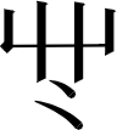
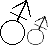
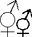

萨希字母
萨希字母是常用于萨希语及各种方言的全音素文字。基本萨希字母共有50个，由黄雀飞设计，由粉色老坤等人改造，分别是30个辅音字母、20个元音字母。此外社区也提出了扩充字母等对萨希字母的扩展方案。
萨希字母的字形整体上相仿希顶字母，自左向右书写，有基线和上伸下延部，但下延部较多而显得字形较拉丁字母偏下。除大小写外，尚有汉写。汉写则是形状或意义相近的汉字，一个希顶汉字的汉写应拼成方块形状，但拼法不定。
| 序号 | 字母（大小中写） | 发音 | 汉写体 | 名称 | 对应部首及字诀 | 希唐 | 希唐发音（拼音） |
| 1 | /a/ | 大 | a-da | 大从纺织（大纟亼糸彡） | 丫 | a | |
| 2 | /p/ | 万 | v3-b | 万从阜邑（阝卩） | 白 | b | |
| 3 | /tʰs/ | 亡 | v0-c | 亡从玉器（王玉） | 丂 | c | |
| 4 | /ɔ͂/ | 力 | C-li | 力从力寸（力寸） | 力 | ong | |
| 5 | /t/ | 刀 | dL-d | 刀从工具（刀刂戈殳耒） | 勺 | d | |
| 6 | /ɛ/ | 幺 | E-yL | 幺从雨雪（雨彐） | 彐 | ai | |
| 7 | /ə/ | 巳 | e-s1 | 巳从肉月（肉月） | 巳 | e | |
| 8 | /f/ | 下 | xa-f | 下从宝盖（宀冖亠㓁） | 畐 | f | |
| 9 | /k/ | 马 | ma-g | 马从牲畜（马牛羊） | 个 | g | |
| 10 | /x/ | 九 | j6-h | 九从禾谷（禾谷） | 合 | h | |
| 11 | /i/ | 工 | gC-i | 工从言语（言讠） | 工 | i | |
| 12 | /cɕ/ | 丁 | diV-j | 丁从皮毛（皮革毛手） | 几 | j | |
| 13 | /kʰ/ | 长 | G0-k | 长从昆虫（虫） | 可 | k | |
| 14 | /l/ | 乙 | yi-l | 乙从力量（弓） | 了 | l | |
| 15 | /m/ | 从 | cC-m | 从从边界（巾门冂） | 末 | m | |
| 16 | /n/ | 门 | m8-n | 门从飞行（飞羽） | 门 | n | |
| 17 | /ɲ/ | 冂 | jC-n | 冂从病死（疒歹） | 冂 | ni | |
| 18 | /ŋ/ | 兀 | M-wu | 兀从金属（金钅） | 兀 | n | |
| 19 | /ɔ/ | 口 | o-k6 | 口从口声（口囗） | 口 | o,uo | |
| 20 | /pʰ/ | 尸 | F1-p | 尸从建筑（尸户工） | 尸 | p | |
| 21 | /ɻ/ | 尺 | G1-r | 尺从文页（文页夂攵） | 尺 | r | |
| 22 | /s/ | 乡 | x0-s | 乡从树木（木） | 纟 | s | |
| 23 | /z/ | 三 | s3-S | 三从水冰（氵冫水） | 王 | se | |
| 24 | /tʰ/ | 七 | qi-t | 七从土地（土） | 下 | t | |
| 25 | /u/ | 凹 | 4L-u | 凹从衣物（衣衤） | 凹 | u | |
| 26 | /y/ | 女 | A-nA | 女从族系（父子母女） | 于 | ü | |
| 27 | /ŋʷ/ | 凵 | k3-v | 凵从动物（犭豸鸟） | 凵 | nu | |
| 28 | /v/ | 山 | F3-w | 山从地形（山） | 山 | w | |
| 29 | /ɕ/ | 乂 | yi-x | 乂从火焰（火灬） | 㐅 | x | |
| 30 | /j/ | 丫 | y-ya | 丫从草木（艹） | 以 | y | |
| 31 | /dz/ | 之 | z-51 | 之从走动（辶廴彳亍） | 之 | z | |
| 32 | /ɹ/,/ɻ/ | 一 | 1-yi | 一从五官（身鼻目） | 一 | ② | |
| 33 | /æ̃/ | 又 | 2-y6 | 又从竹子（竹⺮） | 二 | er | |
| 34 | /æn/ | 了 | 3-le | 了从鬼神（礻鬼） | 三 | an | |
| 35 | ① | 千 | q3-4 | 千从网格（四网罒皿） | 四 | ③ | |
| 36 | /tʃ/ | 与 | yA-5 | 与从九支（九支） | 五 | zh | |
| 37 | /əʊ/ | 右 | y6-6 | 右从蒸汽（气） | 六 | ou | |
| 38 | /ê/ | 亻 | r8-7 | 亻从饮食（食饣歺） | 七 | ④ | |
| 39 | /ẽ/ | 吕 | 8-lA | 吕从手动（手扌） | 八 | en | |
| 40 | /ju/,/ʲu/ | 甲 | ja-9 | 甲从抓取（爪爫） | 九 | iu | |
| 41 | /ã/ | 日 | 0-ri | 日从气象（白日夕黑风光） | 〇 | ang | |
| 42 | /cʰɕ/ | 丩 | j6-q | 丩从交通（中车舟） | 丩 | q | |
| 43 | /ʊɪ/ | 左 | zo-U | 左从方向（前后左右） | 左 | ui | |
| 44 | /ə͂/ | 贝 | bY-V | 贝从钱财（贝尤） | 贝 | eng | |
| 45 | /aʊ/ | 入 | L-ru | 入从心情（忄入卜） | 入 | ao | |
| 46 | /eɪ/ | 人 | Y-r8 | 人从人类（人亻） | 人 | ei | |
| 47 | /tʷ/ | 子 | Z-z1 | 子从心血（心血） | 子 | du | |
| 48 | /tʰʃ/ | 石 | G-F1 | 石从石头（石） | 石 | ch | |
| 49 | /ʃ/ | 厂 | G0-F | 厂从遮盖（厂广） | 厂 | sh | |
| 50 | /n|/ | 卜 | bu-H | 卜从独体字 | 卜 | ce |
| 目录 |
| 1 字母歌 |
| 2 扩充字母 |
| 3 注释 |
字母歌
萨尔瓦多希顶语字母歌采用小星星作为字母歌曲目，其顺序为：
扩充字母
萨尔瓦多希顶社区使用50个扩充字母，用于各种方言的表示，扩充字母的意味在于补全世界上所有的声音，实际上扩充字母的数量远不止50个，只是有50个正式扩充字母，和其余的非正式扩充字母，对应10*10的100宫格。
| 序号 | 字母（大小中写） | 发音 | 汉写体 | 特殊含义 | 批次 |
| 51 | /θ/ | 土 | 1 | ||
| 52 | /θʷ/ | 亚 | 罗马数字2，双子座♊ | 1 | |
| 53 | /ð/ | 只 | 1 | ||
| 54 | /p̪/ | 方 | 2 | ||
| 55 | /p̪ʰ/ | 户 | 2 | ||
| 56 | /χ/ | 巾 | 2 | ||
| 57 | /ʁ/ | 小 | 2 | ||
| 58 | /tθв/ | 芒 | 2 | ||
| 59 | /ʑ/ | 丑 | 2 | ||
| 60 | /ʐ-ɖʐ/ | 耳 | 2 | ||
| 61 | /ɤ/ | 彐 | 2 | ||
| 62 | /e/ | 车 | 2 | ||
| 63 | /nʐ/ | 类 | 2 | ||
| 64 | /β/ | 及 | 2 | ||
| 65 | /tʃʲ/ | 蔡 | 3 | ||
| 66 | /nʐʷ/ | 公 | 3 | ||
| 67 | /ɤ͂/ | 器 | 3 | ||
| 68 | /в/ | 巨 | 4 | ||
| 69 | /ʀ/ | 夕 | 4 | ||
| 70 | /r/ | 尹 | 苏联☭ | 4 | |
| 71 | /ɣʰʲ-gɣʰʲ/ |  | * | 5 | |
| 72 | /xʰʷ-kxʰʷ/ | 乳 | 妈妈头 | 5 | |
| 73 | /ɣʰʷ-gɣʰʷ/ | 旦 | 屁股 | 5 | |
| 74 | /ɸʰʷ-pɸʰʷ/ | 曰 | 肚脐眼 | 5 | |
| 75 | /çtʃʲaʊ/ | ⿱品乙 | 三叶草☘ | 6 | |
| 76 | /sʹ/ | 写 | 6 | ||
| 77 | /tsʹ/ | 己 | 6 | ||
| 78 | /ɬ/ | 我 | 7 | ||
| 79 | /ɮ/ | 币 | 7 | ||
| 80 | /ɣʷ/ | 亼 | 8 | ||
| 81 | /ɣ/ | 辛 | 8 | ||
| 82 | /ʋ/ | 丙 | 8 | ||
| 83 | /w/ | 业 | 8 | ||
| 84 | /ɪ/ | 十 | 8 | ||
| 85 | /ɰ/ | 壬 | 8 | ||
| 86 | /ʐ/ | 水 | 8 | ||
| 87 | /ʂ/ | 木 | 8 | ||
| 88 | /ɻʷ/ | 果 | 8 | ||
| 89 | /!/ | 古 | 9 | ||
| 90 | /!ʷ/ | 早 | 9 | ||
| 91 | /ʘ/ | 回 | 9 | ||
| 92 | /ʘʷ/ | 羊 | 9 | ||
| 93 |  | /|/ | 占 | 10 | |
| 94 |  | /|ʷ/ | 卓 | 10 | |
| 95 | /!!/ | 且 | 10 | ||
| 96 |  |
/!!ʷ/ | 灬 | 10 | |
| 97 | /aɪ/ | 廿 | 10 | ||
| 98 | /ʕʷ/ | 战 | 10 | ||
| 99 | /ʕ/ | 艹 | 10 | ||
| 100 | 无发音 | 萨 | 标志着萨尔瓦多社区对希顶语的整改。 | 10 |
注释
①：在元音前不发音（在E前发音为/a/）。
②：发音为zhi,chi,shi,ri,zi,ci,si后的“i”。
③：不发音。
④：发音一般情况下为ie，与A连读时和A一起发üe。